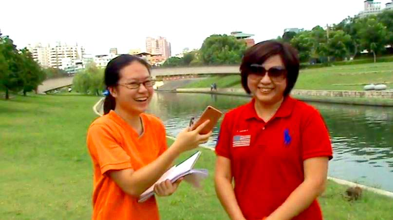
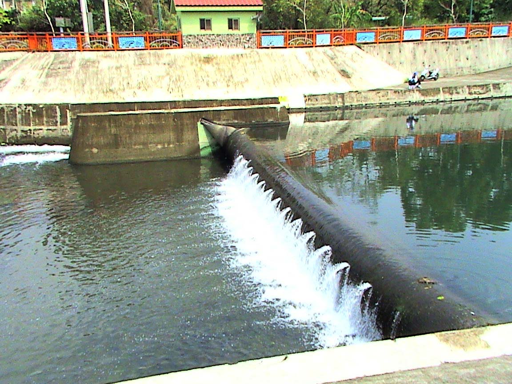

計畫要素
我們研究計畫是怎樣符合網界博覽會的目標與宗旨？
 圖片來源:自行拍攝
圖片來源:自行拍攝
我們親自走訪康橋，訪問改革計畫當事人，而非在網上爬文。致力於讓市民可以更清楚地方環境議題，以及社區的的改革故事。也藉由康橋的探訪，將更多良善的價值與知識傳遞出去，吸引更多人投入社區營造的工作。
我們用什麼方法透過線上或個人接觸來扮演網界博覽會專題研究計畫「大使」或發言人的角色？
圖片來源:自行拍攝我們實地走訪康橋深入研究，訪問光隆里長、台中輕艇協會理事、第三河川局長、協助康橋整治的市議員，以及使用康橋遊憩的市民。研究康橋流域的環境保育議題，並建置中英對照的網頁，讓更多國內外的人知道康橋的故事，扮演網界博覽會專題研究計畫「大使」或發言人的角色。
請解釋說明貴隊使用了哪些資訊科技來完成你們的專題研究計畫？
| 項目 | 使用時機與用途 | 提供者 |
|---|---|---|
| 桌上/筆記型電腦 | 查詢資料、剪輯影片及製作網頁 | 學校、各組員 |
| 錄音器(手機) | 訪問時紀錄內容與拍攝影片時的收音 | 各組員 |
| 手機 | 聯絡組員、老師及相關單位詢問資料 | 各組員 |
| 數位相機 | 訪問時的紀錄與合照、小組開會及行動過程的紀錄 | 輕艇協會會長、老師、各組員 |
| 隨身碟 | 存取圖片、交換資料 | 輕艇協會會長、老師、各組員 |
| 光纖網路及ADSL寬頻網路 | 上傳下載軟體、搜尋資料及聯絡各組員 | 學校、各組員 |
| 硬碟 | 資料備份及存取 | 各組員 |
| WindowsXP、Windows7、Windows8、Windows10、macOS HighSierra | 學校電腦及各組員電腦系統 | 學校、各組員 |
| Microsoft Office 2007、2010、2016 | 整理採訪內容與開會紀錄、網路資料整理、網頁內容撰寫 | 學校、各組員 |
| Adobe Dreamweaver CC 2018 | 網頁製作編輯 | 學校、各組員 |
| Facebook、Messenger、Gmail | 組員與老師相互聯繫 | 學校、各組員 |
| Google雲端硬碟 | 儲存資料 | 學校、各組員 |
| Google文件 | 共同編輯資料 | 學校、各組員 |
我們的專題研究計畫對我們產生了什麼影響與衝擊？
圖片來源:自行拍攝我們在參與研究康橋環境議題這個計畫之前，並沒有經常關注自己周遭的環境，對自己家鄉的環境設施等沒有花太多心思去了解，直到接觸了這個專題，我們才漸漸了解台灣衛生下水道的建置竟是如此落後，也了解都市行政立法，以及公民投入改善社區的方法。
我們地方上的其他成員如何提供協助或義務參與我們的專題研究計畫？
在探討康橋的環境問題時，我們在不同領域的問題方面都得到了不少的協助：
A. 林婉如女士是輕艇協會會長，她為惠文高中的輕艇隊學生爭取得到更好場地的權利，也在此計畫中提供研究的主題及影片的介紹。
B. 林士元先生是永隆里里長，他在康橋舉辦很多親水的活動供民眾參與，增加康橋的人氣及觀光資源，例如在中秋節舉辦的康橋嘉年華，就是讓大家認識康橋的好辦法。
 圖片來源:自行拍攝
圖片來源:自行拍攝
C. 張耀中議員在推動康橋改善計畫時扮演了一個重要的角色，取得中央政府的資金、聆聽人民的意見、監督政府實施等……都是得力的推手。
D. 楊人傑局長是水利署第三河川局局長，在整個康橋計畫中，該局負責防洪工程規劃的同時，也扮演著與民眾溝通的橋梁，使康橋不僅具有防洪的功能，還是一條兼具教育性與休閒性的城市河川。
尊重智慧財產權與引用說明。
我們認為智慧財產權是必須注重的一個環節：在取用他人的資料時，需要注意有無侵犯他們的權利並注意是否違反規定，因此我們在擷取資料時，都會標示參考資料來源。
用哪些不同方法與人溝通？
 圖片來源:自行拍攝
圖片來源:自行拍攝
為了瞭解計畫推行人對保護環境以及興盛地方所下的功夫，我們親自參加了林里長所大力推動的「康橋嘉年華」；親自到市議會，了解議員對此投注的心力以及為民喉舌的成果；更訪問了輕艇協會理事長，探究過去康橋的樣貌；也訪問了水利局長，得知建設防洪工程因地制宜的不同方式。我們希望蒐集多方意見，讓資訊更完整，更了解大眾的看法，讓康橋及其周邊區域能夠做更好的規劃。
發現、教訓和驚奇
這次採訪的人物都是些高級官員或是地方上的重要人物，我們除了更注意禮貌外，也發現這些人物們私底下有趣的一面：原本以為官員們會非常嚴肅，讓我們不禁緊張了起來，但是和他們討論一番後才發現他們如此和藹可親。
因為執行此專題時段考將至，需要有效率的分配時間，組員學到前所未聞的知識、溝通協調、與時間管理。最重要的，我們不會再當無能的讀書人，我們都學會了如何社會參與，以及如何當一個有行動力的有為公民。
 圖片來源:自行拍攝
圖片來源:自行拍攝